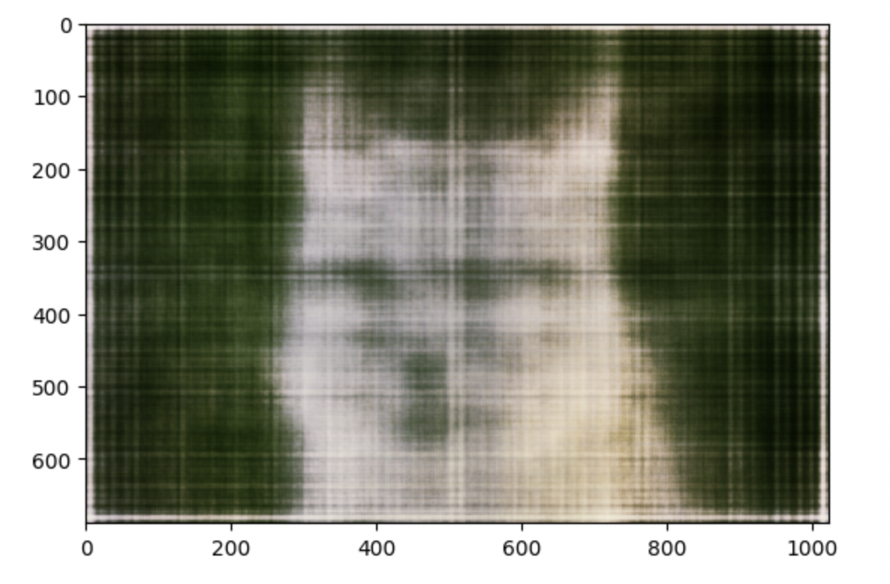
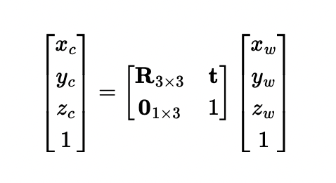

Overview
In this project, I used Neural Radiance Field to generate 3D scenes from a set of 2D images. I first trained and tested a neural network to reconstruct 2D images and then defined more utility functions such as volume rendered to help with 3D image reconstruction.
Part 1
Fit a Neural Field to a 2D Image
In part 1, first I defined position encoder function that applies a serious of sinusoidal functions to the input cooridnates so that the model is more sensitive to variations in higher dimensions. I used the encoder to turn 2 dimension coordinate to 42 dimension coordinate. Then we defined a dataloader that reads the images and samples N pixels, outputting their normalized coordinates and color values. We want all values to fall into the range of [0, 1]. In the following step, I defined loss function, optimizer, and evaluation metric. I used the Peak signal-to-noise ratio (PSNR) as the evaluation metrix. Below are the hyperparameters and the training result.
learning rate: 1e-2 L = 10 layer = 4 iteration = 2000
|  |
learning rate: 1e-3 L = 15 layer = 4 iteration = 2000
learning rate: 1e-2 L = 15 layer = 6 iteration = 2000
Other image
learning rate: 1e-2 L = 10 layer = 4 iteration = 2000
Part 2
Create Rays from Cameras
In this part, I wrote several functions to convert world coordinates to camera rays. First I created a transform function to transform a point from camera coordinate to world coordinate. I used this assert statement x == transform(c2w.inv(), transform(c2w, x)) to check the correctness of my function. In order to support batch coordinates, I padded the camera coordinates with ones and enabled matrix multiplication with np. To implement pixel to camera coordinate conversion, I first caculated the intrinsic matrix k with focal length and image width and image heights. Since I have pixel coordinate, I used the inverse of the below coordinates to calculate the camera coordinates. The last function in this part is a function that converts a pixel to ray. To calculate the origin, we used the below formula: calculating the inverse of the rotation matrix and translational vector. To calculate the direction, we used the below formula.
|  |

|
Sampling
In this part, I wrote two functions: Sampling Rays from Images and Sampling Points along Rays. For the first function, I sampled M images and then sampled N//M rays from each image. I generated random x and y points from np.random.randint and used the coordinates to get color pixels from the image. Then I use pixel to ray function to get all the ray origins and directions from the chosen color pixels and output them. For sample points along ray function, I generated random t values between near and far and add perturbations to the t values. Then I used the ray origin and direction to calculate the points along the ray and output them. The perturbations are added to avoid overfitting.
Putting the Dataloading All Together
In this part, I created a dataset class that stores ray origins, ray directions, uvs, etc, in the init function and it also contains a sample_rays function that samples num_samples rays from each image. The function will be used in the model training process and will be used to generate points that actually got feeds into the model. Upon correct implementation, we will get the visualization rays and cameras like below.
Neural Radiance Field
In this part, I implemented a neural network with below architecture. First I implemented position encoder for both the coordinates and densities. The position encoder follows the same structure as the encoder in part 1, with the exception that the output dimension is (dim, 3). Then I created neural network model with the following layers, after the fourth RELU layer, I need to concatenate the current value with the output of the position encoder to remind the model of the original input. After step 8, I need to split the current value into density and color. Also we need to concatenate the density into the model at some point. The model overall considers both density and color estimation, allowing us to have a comprehensive representation of the scene.
Volume Rendering
The last part is volume rendering. In this step, I approximate the value of the color using the below formula. It calculates the alpha values based on density values and step sizes. It then computes the weight and generated a weigted sum to get the rendered image.
Lastly, I used the volume rendered image to calculate loss at each step inside the training process. After training the model, I used the validation sets to generate images and evaluate the results.Images across iterations are shown below